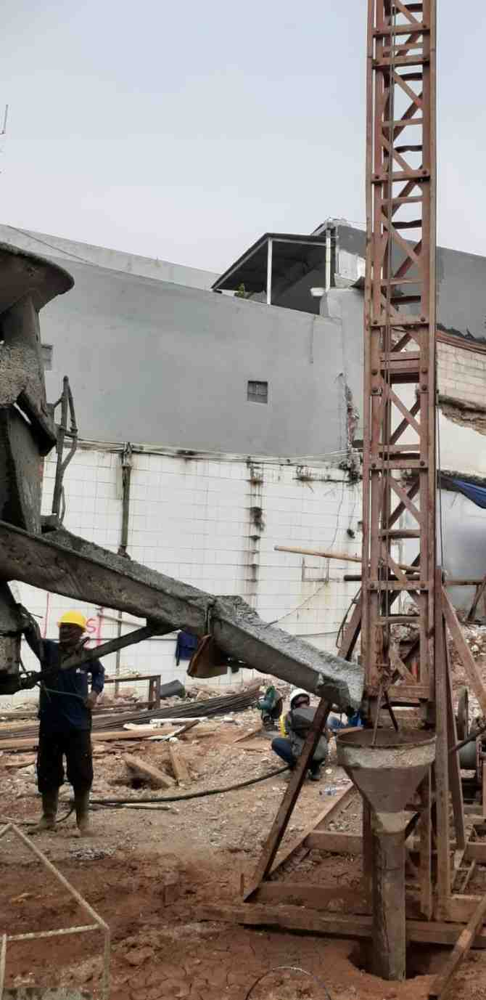
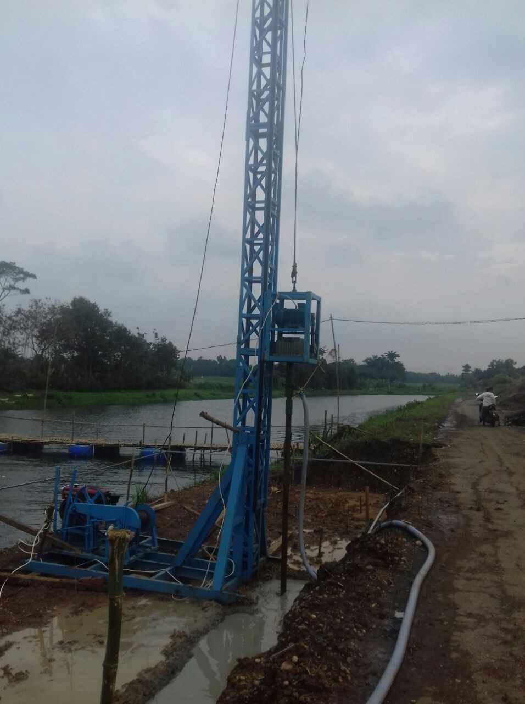
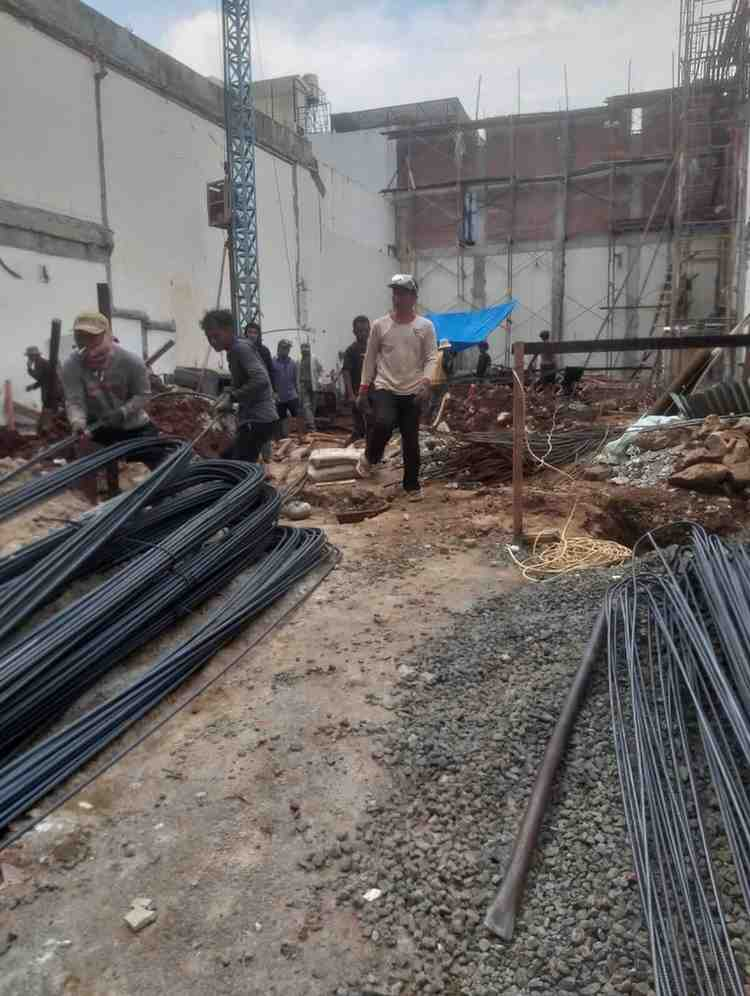

Harga Bore Pile Jakarta Terbaru 2026: Kalkulator Estimasi Biaya (Mesin & Manual)
Dibuat oleh tim Agung Perkasa: Kalkulator ini bisa memberikan estimasi total biaya jasa borepile untuk memilih metode 2 bore pile (mesin atau manual), caranya tinggal pilih diameter, masukkan kedalaman & jumlah titik. Harga dan kedalaman bisa diatur sendiri sesuai keinginan atau dikosongkan mengikuti harga tabel. Hasil perhitungan akan muncul otomatis. Estimasi bisa kami pastikan cukup akurat karena kami menggunakan data aktual dari proyek-proyek yang sudah kami kerjakan di Jakarta dan sekitarnya.
Kalkulator Estimasi Biaya Bore Pile
Estimasi Total Biaya JASA BOR
Tabel Harga Bore Pile Jakarta 2026 (Jasa Bor Saja)
Berikut harga JASA PENGEBORAN SAJA (belum termasuk material beton & besi), untuk wilayah Jakarta dan sekitarnya.
Bore Pile Mesin (Mini Crane)
| Diameter | Harga (Rp/m) | Kedalaman Maks | Cocok Untuk |
|---|---|---|---|
| 30 cm | 120.000 | 20 meter | Rumah 1-2 lantai |
| 40 cm | 135.000 | 20 meter | Ruko, kantor |
| 50 cm | 190.000 | 20 meter | Gudang, pabrik kecil |
| 60 cm | 250.000 | 15 meter | Hotel 3-4 lantai |
| 80 cm | 350.000 | 10 meter | Gedung 5-8 lantai |
Bore Pile Manual
| Diameter | Harga (Rp/m) | Kedalaman Maks | Cocok Untuk |
|---|---|---|---|
| 20 cm | 70.000 | 6 meter | Area sangat sempit |
| 25 cm | 75.000 | 6 meter | Gang kecil |
| 30 cm | 85.000 | 6 meter | Rumah 1-2 lantai (tanah padat) |
| 40 cm | 100.000 | 6 meter | Rumah 2 lantai (tanah padat) |

Bore Pile Mesin (Mini Crane): Kedalaman hingga 20 meter, lebih kuat, cocok untuk bangunan besar dan tanah lunak.
Bore Pile Manual: Kedalaman hingga 6 meter, lebih ekonomis, cocok untuk area sempit dan bangunan kecil.
Konsultasikan dengan tim Ahli kami untuk menentukan metode terbaik sesuai kondisi tanah dan beban bangunan Anda.
Hal yang Mempengaruhi Harga Bore Pile Jakarta
Harga bore pile tidak sama untuk setiap proyek. Berikut 6 faktor utama yang menyebabkan perbedaan biaya:

Pengeboran bore pile menggunakan mini crane yang mampu menembus tanah lunak hingga kedalaman 20 meter. Setelah lubang selesai, dirakit rangka besi dan dimasukkan besi tulangan tersebut kemudian dicor beton.
Metode ini menghasilkan sedikit getaran sehingga aman untuk bangunan di sekitarnya, berbeda dengan tiang pancang yang menghasilkan getaran yang lebih besar karena beton langsung dipalu ke dalam tanah.
Diameter & Kedalaman
Semakin besar diameter dan semakin dalam pengeboran, maka biaya per meter semakin tinggi.
Kondisi Tanah
Tanah lunak (bekas rawa/sawah) membutuhkan pengeboran yang lebih dalam, biaya bisa lebih besar.
Jarak Lokasi
Proyek jauh dari gudang kami bisa dikenakan biaya mobilisasi lebih tinggi (di luar jakarta).
Volume Pekerjaan
Minimal order 200m (mesin) dan 100m (manual), di bawah itu bisa hubungi admin.
Tingkat Kesulitan
Akses sulit, area sempit, atau bangunan khusus bisa berbeda biayanya.
Jenis Proyek
Proyek rumah tinggal pribadi lebih murah daripada proyek kontraktor besar.

Pilih diameter yang tepat sangat mempengaruhi biaya dan kekuatan pondasi.
- Diameter 30 cm → rumah 1-2 lantai
- Diameter 40-50 cm → ruko, kantor
- Diameter 60-80 cm → gedung bertingkat

Mini crane adalah alat utama kami untuk bore pile mesin. Keunggulannya:
- Mobilitas tinggi - bisa masuk area perumahan padat
- Getaran minimal - aman untuk bangunan sekitar
- Kedalaman hingga 20 meter - solusi untuk tanah lunak
- Efisiensi waktu - 1-4 titik per hari tergantung kedalaman
Biaya Tambahan yang Perlu Diperhatikan
Mobilisasi Alat
Mesin: Rp3-5jt (Jabodetabek) | Manual: Rp1-2jt
Minimal Order
Bore pile mesin: 200m | Manual: 100m, di bawah itu bisa menghubungi admin kami
Sedot Lumpur
Tergantung volume (Rp800-1.200/rit)
Data Sondir
Wajib ada karena sangat penting untuk menentukan kedalaman yang tepat

Setelah tanah dibor, lubang diisi dengan besi tulangan (standar SNI) kemudian dicor dengan beton K-300 hingga K-400.
Spesifikasi teknis:
- Besi tulangan: D13mm - D19mm (SNI)
- Sengkang: D8mm - D10mm jarak 15-20cm
- Beton: site mix atau ready mix K-300 s/d K-400
Contoh Hitungan Proyek Nyata
Bore Pile Mesin
Proyek: Rumah 2 lantai, Bekasi
Spesifikasi: Dia. 40cm, kedalaman 12m, 16 titik
Biaya: 12m × Rp135.000 × 16 = Rp25.920.000
+ mobilisasi Rp3jt = Rp28.920.000
Waktu: 7 hari kerja
Bore Pile Manual
Proyek: Rumah 1 lantai, Jakarta
Spesifikasi: Dia. 30cm, kedalaman 4m, 12 titik
Biaya: 4m × Rp85.000 × 12 = Rp4.080.000
+ mobilisasi Rp1,5jt = Rp5.580.000
Waktu: 5 hari kerja
Komitmen & Garansi Mutu
Kami memberikan garansi penuh atas kualitas dalam pengerjaan proyek. Kami menjamin kualitas terbaik karena didukung oleh tim ahli kami yang sangat berpengalaman membuat pondasi dalam (khususnya bore pile)
Pertanyaan yang Sering Diajukan
Bore pile mesin pakai mini crane, kedalaman hingga 20m, biaya lebih tinggi. Bore pile manual pakai tenaga manusia, kedalaman 6m, lebih murah untuk proyek kecil dan area sempit.
Jika ingin membuat rumah 2 lantai ke atas atau tanah bekas rawa kami sarankan menggunakan bore pile mesin. Jika hanya rumah 1 lantai, area sempit, budget terbatas bisa menggunakan bore pile manual.
Bore pile mesin 200 meter. Bore pile manual 100 meter. Bisa tanyakan lebih lanjut ke admin kami.
Sangat bisa. Jadi harga di atas untuk jasa bor saja. Anda bisa beli material sendiri sesuai kebutuhan pondasi Anda.
Diameter, kedalaman pengeboran, kondisi tanah, jarak lokasi proyek dari gudang kami, volume pekerjaan, dan tingkat kesulitan proyek.
Butuh bore pile untuk proyek Anda?
Dapatkan penawaran resmi dan konsultasi gratis dari tim teknis kami
Konsultasi Gratis